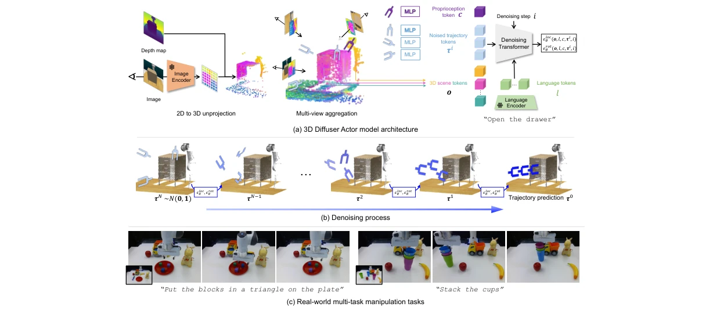
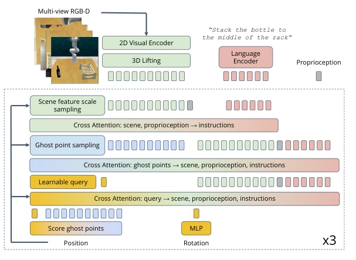
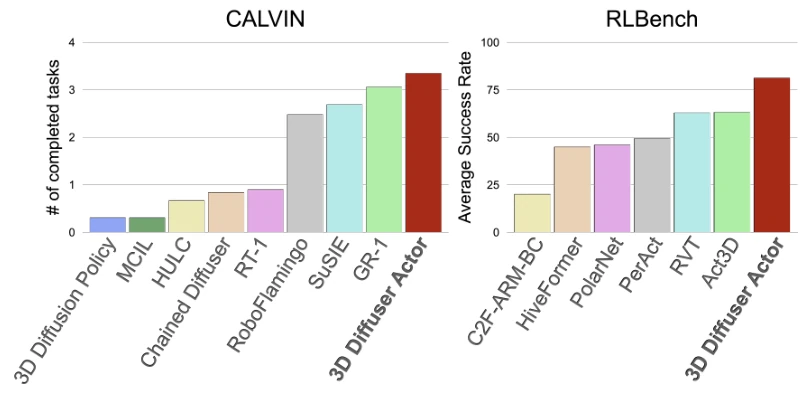
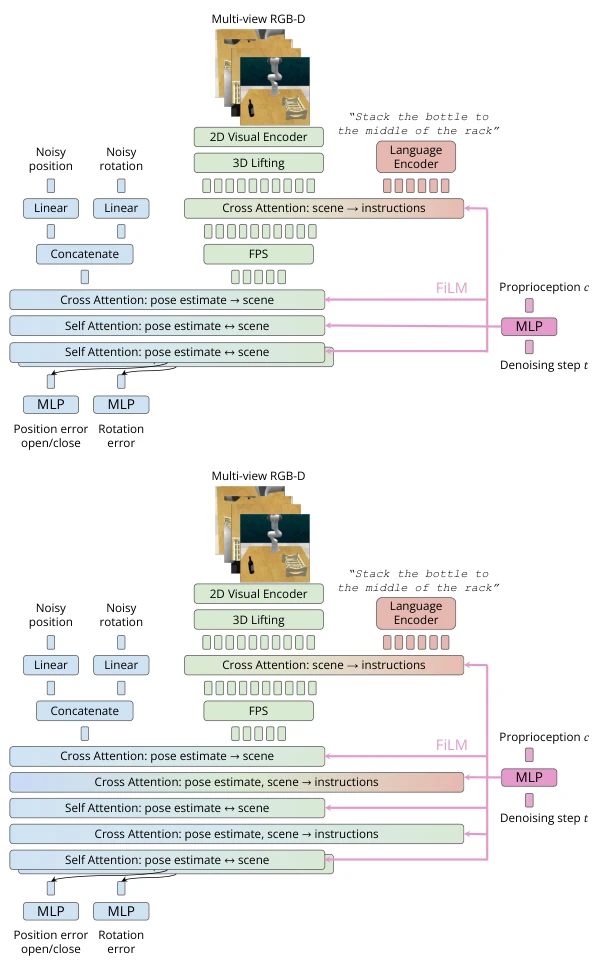
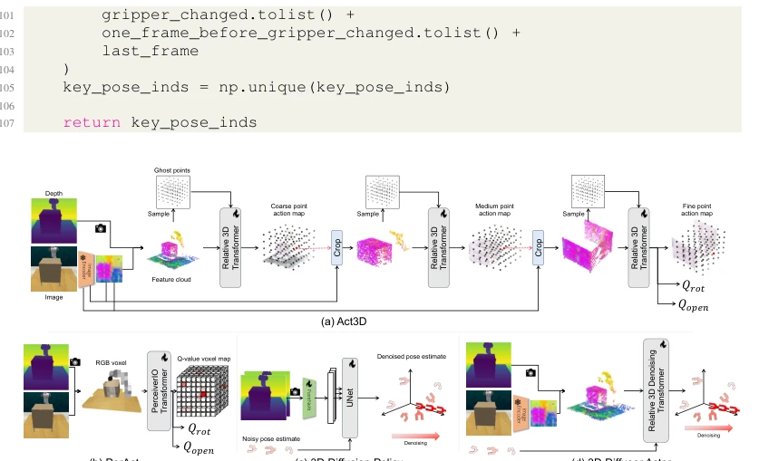

This paper essentially forces together the two trends of "Diffusion Policy" and "3D Scene Representation". Although Diffusion Policy has been popular for a long time, and 3D representation has always been a prized asset in embodied intelligence, the authors did nothing fancy, just honestly threw 3D tokens into a Transformer for denoising. The results are indeed impressive, leaving Act3D by 18 points on RLBench, and performing more steadily on CALVIN. However, do not get too excited too soon; this model requires depth maps, so if you lack a depth sensor, forget it, and inference speed is much slower than non-diffusion policies, after all, it requires iterative denoising. Additionally, experimental scenes are basically quasi-static; dynamic control has not even touched the edge. The authors claim tokenized representations are more robust than holistic embeddings, which is indeed reflected on CALVIN, but essentially it still relies on explicit modeling of 3D spatial structure. Overall, it is a solid engineering improvement, but far from "general"; do not expect it to be directly deployed on all robots, especially those cheap devices without depth cameras.
Robot manipulation tasks are essentially multimodal, human demonstrations often contain multiple completion methods, therefore policy learning should be viewed as distribution learning rather than deterministic mapping [1, 2, 3, 4]. Recent diffusion policies [5, 6] perform excellently in action distribution learning, but most rely on 2D images or low-dimensional states, lacking explicit modeling of 3D geometry, leading to limited cross-view generalization ability. On the other hand, 3D robot policies [13, 14, 15, 16, 17, 18] build scene representations through depth information, generalizing better under view changes, but existing methods mostly adopt deterministic outputs or classification/regression targets, making it difficult to capture the multimodality of actions. Although ChainedDiffuser [21] attempts to combine diffusion, it serves only as a motion planner rather than a manipulation policy. Meanwhile, 3D Diffusion Policy [22], although having similar goals, uses 1D point cloud embeddings instead of tokenized 3D scenes, resulting in poor robustness to scene changes. Therefore, this paper aims to unify these two routes, utilizing the spatial reasoning capability of 3D scene representations and the multimodal modeling capability of diffusion models.
方法Method
3D Diffuser Actor 是一个条件扩散概率模型，输入为视觉场景、语言指令和 proprioception，输出为机器人末端执行器的未来轨迹。整体流程分为 tokenization、去噪 Transformer 和扩散采样。首先，模型将多视角 RGB-D 图像通过预训练 CLIP ResNet50 提取 2D 特征，结合深度图反投影为 3D 场景 token，每个 token 包含特征向量和 3D 位置。语言指令通过 CLIP 语言编码器转为语言 token，本体感知信息作为当前末端位置的 3D token。所有 token 输入到 3D Relative Denoising Transformer 中。核心创新在于使用相对 3D 注意力机制（relative 3D attentions），利用旋转位置编码（RoPE）编码相对位置信息，实现平移等变性（translation equivariance），增强泛化。模型预测噪声分量 epsilon_loc 和 epsilon_rot 以及末端开合状态。训练时随机采样扩散步和轨迹，使用 L1 损失和 BCE 损失。推理时从高斯噪声开始迭代去噪。相比 Act3D [17] 的采样点分类，本方法直接预测轨迹噪声；相比 [22] 的 1D 嵌入，本方法保留空间 token 结构。
3D Diffuser Actor is a conditional diffusion probabilistic model, with inputs being visual scene, language instructions, and proprioception, and output being the future trajectory of the robot end-effector. The overall process is divided into tokenization, denoising Transformer, and diffusion sampling. First, the model extracts 2D features from multi-view RGB-D images through a pre-trained CLIP ResNet50, combines them with depth map back-projection into 3D scene tokens, each token containing a feature vector and 3D position. Language instructions are converted into language tokens via CLIP language encoder, proprioception information serves as 3D tokens of the current end-effector position. All tokens are input into the 3D Relative Denoising Transformer. The core innovation lies in using relative 3D attention mechanisms (relative 3D attentions), utilizing Rotary Positional Encoding (RoPE) to encode relative position information, achieving translation equivariance, enhancing generalization. The model predicts noise components epsilon_loc and epsilon_rot and the end-effector open/close state. During training, diffusion steps and trajectories are randomly sampled, using L1 loss and BCE loss. During inference, iterative denoising starts from Gaussian noise. Compared to Act3D [17]'s sampled point classification, this method directly predicts trajectory noise; compared to [22]'s 1D embeddings, this method retains spatial token structure.

Figure 2: Overview of 3D Diffuser Actor. (a) 3D Diffuser Actor is a conditional diffusion proba- bilistic model of robot 3D trajectories. At diffusion step i, it converts the current noised estimate of the robot’s future action trajectory τ i, the posed RGB-D views o, and proprioceptive information c to a set of 3D tokens. It fuses information among these 3D tokens and language instruction tokens l using 3D relative denoising transformers to predict the noise of 3D robot locations ϵloc θ (o, l, c, τ i, i) and the noise of 3D robot rotations ϵrot θ (o, l, c, τ i, i). (b) During inference, 3D Diffuser Actor iteratively denoises the noised estimate of the robot’s future trajectory. (c) 3D Diffuser Actor works in the real world and captures the multiple behavioural modes in the training demons

Figure 6: Act3D architecture in more detail. Ghost points and encoded scene feature inputs are sampled based on the current end-effector position. The 3D location of ghost points are even sampled from a fixed-radius sphere, which is centered at the current end-effector position.
实验Experiments
在 RLBench 仿真基准上，3D Diffuser Actor 在多视图设置下平均成功率 81.3%，较 SOTA Act3D 提升 18.1%；单视图下提升 13.1%。在 CALVIN 零样本长视界任务中，相对提升 9%。真实世界实验中，仅用少量示范即可控制 Franka 机械臂完成 12 项任务。对比基线包括 3D 策略（Act3D, PerAct, RVT）和 2D 扩散策略（Diffusion Policy）。消融实验显示，移除 3D 场景编码（2D Diffuser Actor）性能大幅下降，移除相对注意力（w/o RelAttn）也导致泛化能力减弱，证明 3D 表示和相对注意力对平移等变性的关键作用。此外，模型推理速度约 600ms，慢于部分非扩散策略，但优于 ChainedDiffuser。
On the RLBench simulation benchmark, 3D Diffuser Actor achieves an average success rate of 81.3% under multi-view settings, an improvement of 18.1% over SOTA Act3D; under single-view, an improvement of 13.1%. In CALVIN zero-shot long-horizon tasks, a relative improvement of 9%. In real-world experiments, only a few demonstrations are needed to control the Franka robot arm to complete 12 tasks. Comparison baselines include 3D policies (Act3D, PerAct, RVT) and 2D diffusion policies (Diffusion Policy). Ablation studies show that removing 3D scene encoding (2D Diffuser Actor) leads to a significant performance drop, removing relative attention (w/o RelAttn) also leads to weakened generalization ability, proving the key role of 3D representation and relative attention for translation equivariance. Additionally, the model inference speed is about 600ms, slower than some non-diffusion policies, but better than ChainedDiffuser.

Figure 1: 3D Diffuser Actor marries diffusion policies and 3D scene encodings to set a new state- of-the-art on RLBench [11] on a multi-task setup and on CALVIN [12] benchmarks on a zero-shot long-horizon setup.

Figure 5: 3D Diffuser Actor architecture in more detail. Top: Standard version: the encoded inputs are fed to attention layers that predict the position and rotation error for each trajectory timestep. The language information is fused to the visual stream by allowing the encoded visual feature tokens to attend to language feature tokens. There are two different attention and output heads for position and rotation error respectively. Bottom: version with enhanced language conditioning: cross-attention layers from visual and pose estimate tokens to language tokens are interleaved between pose estimate- visual token attention layers.
其他图片Other Figures

Figure 4: Comparison of 3D Diffuser Actor and other methods. (a) Act3D [17] encodes input images into with a 2D feature extractor, lifts 2D feature maps to 3D, samples ghost points within the scene, featurizes ghost points with relative cross attention to the 3D feature cloud, and classifies each ghost point. The position is determined by the XYZ location of the ghost point with the highest score. Act3D then crops the scene with predicted end-effector position, and iterates the same classification procedure. The rotation and openess are predicted with learnable query embeddings. (b) PerAct [16] voxelizes input images and uses a Perceiver Transformer [56] to predict the end-effector pose. The position is determined by the XYZ location of the voxel with the highest Q-value. The rotation and